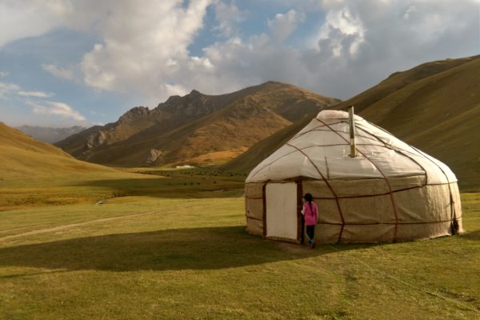
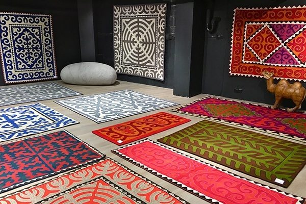
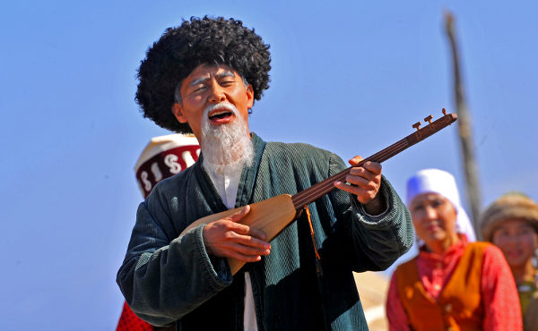
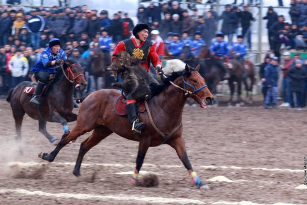

The traditional culture in Kyrgyzstan represents a highly significant phenomenon, easily encountered in everyday life. The folk traditions and customs of the Kyrgyz people are closely linked to the nomadic way of life, characteristic of Turkic and Mongolian peoples. Almost everything is associated with nomadism: holidays, folk crafts, poetry and music, cuisine, and daily life. Even today, despite Kyrgyzstan being a modern state, folk traditions are respected, cherished, and carefully passed down from generation to generation.

Undoubtedly, one of the main symbols of Kyrgyzstan is the nomadic dwelling — the yurt. For centuries, the yurt has been the primary residence of the Kyrgyz people, defining their way of life, which involves moving from plains to mountains and back. People lived in yurts year-round, celebrations were held inside them, and the yurt itself held immense value and significance. Technically, a yurt is a small tent with a wooden collapsible frame covered with layers of felt, which insulate against cold and moisture. All elements of the frame and covering are collapsible, making it easy to assemble and move the yurt to another location. The yurt is not solely a Kyrgyz invention; it is widely used among Mongolian and Turkic peoples as well. However, the Kyrgyz yurt is renowned as the most beautiful and skillfully crafted. It features a more complex manufacturing technique, requiring great patience and mastery. For instance, the roof poles of a Kyrgyz yurt are bent through prolonged soaking and drying, and the wall poles are joined with cow tendons, ensuring strength and lightness. The most intricate part of the Kyrgyz yurt is the tunduk — the upper part serving as the roof's connection point. The tunduk also acts as a chimney and a source of light during the day. Interestingly, the tunduk is depicted on the flag of the Kyrgyz Republic. Unlike in other countries where yurts are primarily set up and manufactured for decorative purposes and are rare, in Kyrgyzstan, yurts are still widely used in everyday life. Authentic Kyrgyz yurts can easily be found on high-altitude pastures where livestock grazes in the summer. They are also widely used as guesthouses in remote mountainous areas.

The nomadic and pastoral culture of the Kyrgyz people naturally gave rise to a material culture closely connected with animals. For centuries, Kyrgyz people have created many beautiful and interesting items from sheep wool and animal hides. The primary product of Kyrgyz craftsmanship is undoubtedly felt. Felt is a coarse material made from compressed sheep wool and has become one of the most significant materials in Kyrgyz culture. The range of applications for felt is truly immense. It is used to make coverings for yurts, clothing including the traditional robe known as a chapan and the ak-kalpak hat, toys, interior items, and much more. However, the famous Kyrgyz felt carpet — shyrdak — holds a special place, as its production requires great skill and perseverance. Shyrdak is characterized by ethnic ornament patterns, which are intricate and quite complex to apply. Kyrgyz "czinovki," woven from a plant called "chiy," are also widely known. They serve to produce felt, insulate yurts, and are used for decorative purposes. Another aspect of folk craftsmanship is the art of leatherworking and the production of various items from this noble material. Sheaths for weapons, belts and straps, horse harnesses and saddles, kitchen utensils — these are just a small part of the amazing things created by folk masters in leatherworking.

Oral and musical creativity play an important role in Kyrgyz national culture. Its most prominent manifestation is the world's largest epic — Manas. This epic, created between the 16th and 17th centuries, was transmitted orally for centuries before being recorded by Soviet researchers in the 20th century. Manas is a vast work consisting of over 500,000 lines of text. It narrates events from the 16th century, including the Kyrgyz migration from the Altai Mountains to the Tien Shan, their struggle against Chinese invaders, and has real historical roots. The epic is performed in a special manner. Epic storytellers, known as "manaschis," are capable of reciting the text of the epic continuously for several days, entering into a kind of trance. Often, such performances are accompanied by playing the Kyrgyz national instrument — the komuz. Another manifestation of Kyrgyz musical culture is the renowned poet-storytellers called "akyns." Their uniqueness lies in improvisation, and each rendition of a song invariably differs from another. Of course, the Kyrgyz people also have their own musical instruments, each with a unique sound. The most well-known among them are the komuz, temir-komuz, kek-kiyal, kerney, surnay, choor, and zhetigen.

The history of Kyrgyz national sports games dates back to the distant nomadic past when men needed to demonstrate their strength, agility, and willpower. It's not surprising that almost all national sports in Kyrgyzstan are associated with horses. The most popular national sports are equestrian sports. The most famous is the competitive team game of kok-boru, where two teams of 8 players compete in throwing a goat carcass into the opponent's goal. This game requires great endurance, physical strength, and horse riding skills. High demands are also placed on the horse itself, which must be obedient, strong, and to some extent fearless. Also popular is er-enish, which is a form of wrestling on horseback, where the goal is to throw the opponent off their horse. Additionally, horse racing and speed competitions are widely practiced among equestrian sports. Another important sport for the Kyrgyz people is wrestling, both Greco-Roman and freestyle wrestling common worldwide, as well as the national Kyrgyz belt wrestling — alysh. In addition to strength and agility competitions, there are also national intellectual games. These include mangala and toguz korgool. One of the most popular recreational games is Chuko, known in the Russian language as the game of Alchiki.